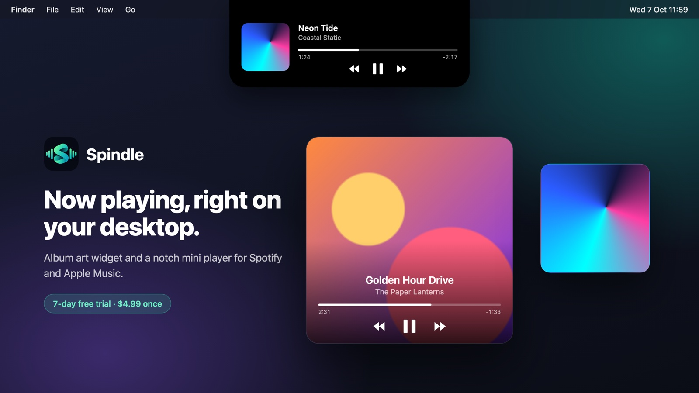

Work · September 2026
The record sleeve, back on my desk
Spindle. A native macOS album-art widget for Spotify and Apple Music, with hover controls and a mini player that lives around the notch.
Toolsin progressSep 2026

Album art used to be something you held while the music played. On a Mac the closest thing is a small widget that shows the cover of whatever is playing. The good ones exist, and they are good, but they cost a little more than I think such a small utility should.
So I wrote my own. Spindle puts the album art on the desktop as a tile. Hover over it and the controls appear. A second mini player sits around the notch at the top of the screen and expands when the pointer comes near.

There are no API keys and no logins. Every second, a short AppleScript asks Spotify or Music what is playing, and the answer is all Spindle needs.
The most useful lesson was a dull one. Swift swallows AppleScript syntax errors into vague failures at runtime, so I now test every script on its own in the terminal before it goes anywhere near the app.
Spindle comes with a seven-day trial and a licence check that works offline, at a lower price than the widgets that inspired it.
Made with
SwiftSwiftUIAppKitAppleScript
Nearby projects
 Seeing · Tools
Conducting my desktop with bare hands
Gesture control for macOS. Swipe between desktops in mid-air, pinch to click, throw windows to the other screen.
Seeing · Tools
Conducting my desktop with bare hands
Gesture control for macOS. Swipe between desktops in mid-air, pinch to click, throw windows to the other screen.
 Tools · Robots & devices
A notebook that writes back
Tom Riddle's diary on a Supernote e-ink tablet. Write and rest your pen; your ink fades into the page and an answer writes itself back, letter by letter.
Tools · Robots & devices
A notebook that writes back
Tom Riddle's diary on a Supernote e-ink tablet. Write and rest your pen; your ink fades into the page and an answer writes itself back, letter by letter.
 Data science · Tools
The org chart nobody draws
An organisation as one graph of goals, projects, people and skills, with the views leaders ask for. Built on a synthetic demo company.
Data science · Tools
The org chart nobody draws
An organisation as one graph of goals, projects, people and skills, with the views leaders ask for. Built on a synthetic demo company.
Comments
Sign in with GitHub to leave a comment or react.